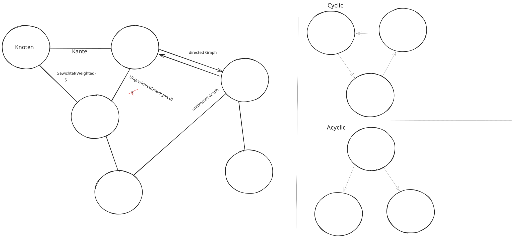
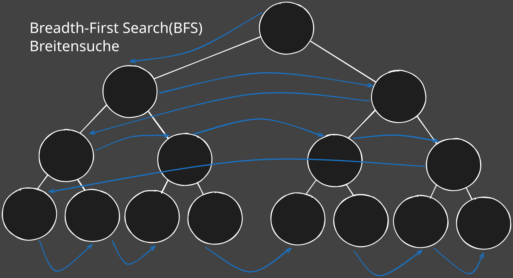
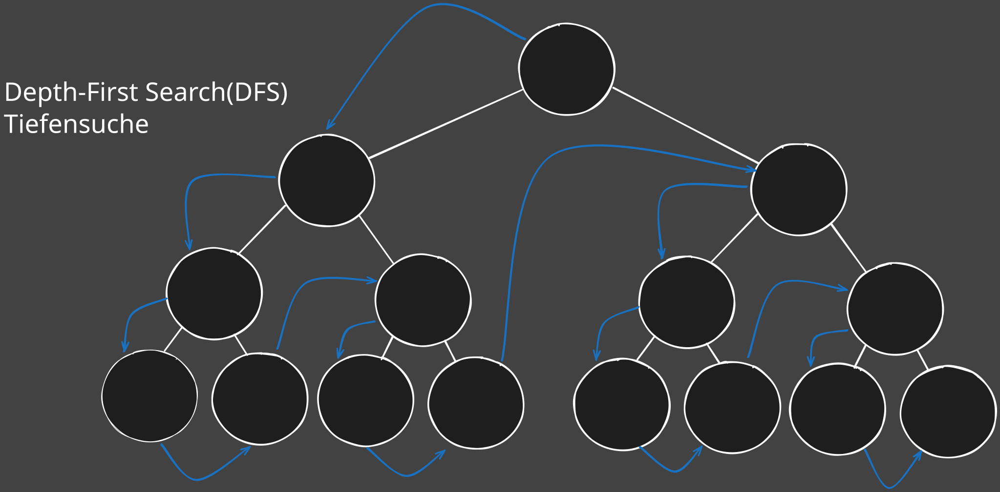
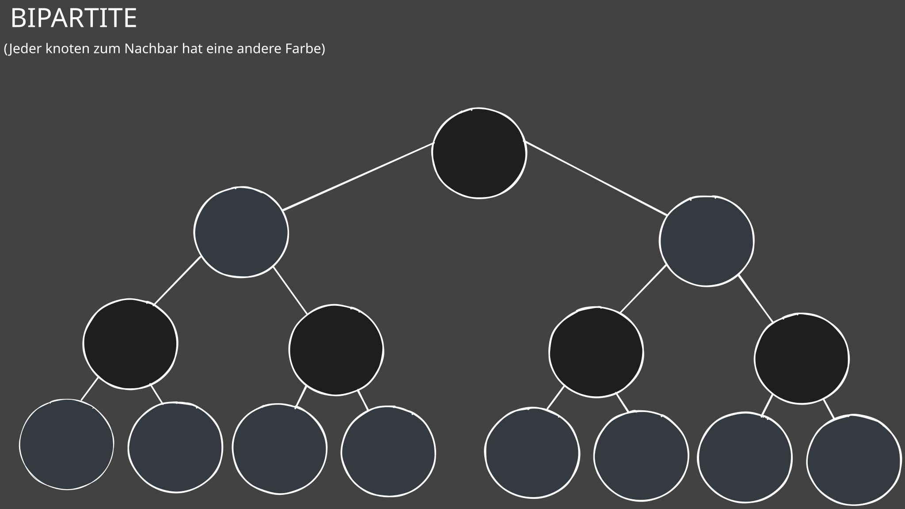
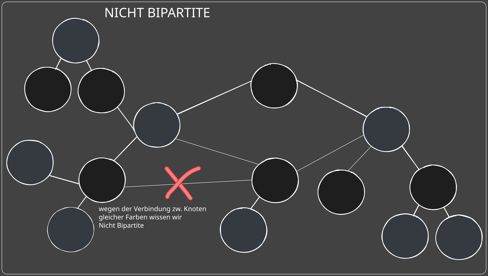

📊 Graphen: Grundlagen¶
Ein Graph ist eine mathematische Struktur, die aus:
- Knoten (Vertices) besteht, die Objekte repräsentieren,
- und Kanten (Edges), die Verbindungen zwischen diesen Knoten darstellen.
Graphen werden verwendet, um Beziehungen zwischen Objekten zu modellieren, z.B. in Netzwerken, Routenplanung, Datenbanken oder Sozialen Netzwerken.
Arten von Graphen¶
1.1. Gerichtet (Directed) vs. Ungerichtet (Undirected)¶
-
Gerichteter Graph (Digraph):
- Die Kanten haben eine Richtung (Pfeile).
- Eine Kante von A nach B ist nicht dasselbe wie von B nach A.
- Beispiel: Verkehrsnetz (Einbahnstraßen).
-
Ungerichteter Graph:
-
Kanten haben keine Richtung.
- Eine Kante verbindet Knoten symmetrisch: A ↔ B.
- Beispiel: Freundschaften in sozialen Netzwerken.
1.2. Gewichteter (Weighted) vs. Ungewichteter (Unweighted)¶
-
Gewichteter Graph:
- Jede Kante hat ein Gewicht (z.B. Kosten, Entfernung, Zeit).
- Wird bei kürzesten Wegen oder Netzwerkoptimierungen verwendet.
-
Ungewichteter Graph:
-
Kanten sind einfach Verbindungen ohne zusätzliche Werte.
- Gut für einfache Struktur-Analysen (z.B. Erreichbarkeit).
1.3. Zyklisch (Cyclic) vs. Azyklisch (Acyclic)¶
-
Zyklischer Graph:
- Enthält mindestens einen Zyklus (geschlossener Pfad).
- Beispiel: Stromnetz, Straßennetze.
-
Azyklischer Graph (DAG – Directed Acyclic Graph):
-
Enthält keinen Zyklus.
- Wichtig für: Task-Planung, Versionskontrolle, Kompilierung von Abhängigkeiten.
-
Spezialfall:
-
Ein Baum ist ein ungerichteter, azyklischer, zusammenhängender Graph.

1.4. Adjazenzmatrix¶
-
Eine Matrix AAA, die angibt, ob zwei Knoten direkt verbunden sind.
-
Für ungewichtete Graphen:
- \(A[i][j]=1A[i][j] = 1A[i][j]=1\), wenn eine Kante von Knoten i nach j existiert.
- \(A[i][j]=0A[i][j] = 0A[i][j]=0\), wenn keine Verbindung besteht.
-
Für gewichtete Graphen:
- Die Matrix speichert das Gewicht der Kante anstelle von 1.
- Kein Pfad = Unendlich (∞) oder 0 (je nach Definition).
-
Speicherbedarf:
- \(O(V2)O(V^2)O(V2)\) → Nicht effizient bei großen, spärlichen Graphen.
- Vorteil: Schneller Zugriff auf Kanten: \(O(1)O(1)O(1)\).
-
Beispiel:
Für Knoten {A, B, C} mit Kanten A–B, B–C:
Adjazenzmatrix (ungewichtet)¶
| A | B | C | |
|---|---|---|---|
| A | 0 | 1 | 0 |
| B | 1 | 0 | 1 |
| C | 0 | 1 | 0 |
Adjazenzmatrix (gewichteter, gerichteter Graph)¶
- Gerichteter Graph: Die Matrix ist nicht symmetrisch.
- Gewichtete Kanten: Zahlen repräsentieren die Kosten/Entfernungen.
- Unverbundene Knoten: Markiert mit ∞.
| A | B | C | |
|---|---|---|---|
| A | 0 | 4 | 2 |
| B | ∞ | 0 | 5 |
| C | 3 | ∞ | 0 |
1.5. Adjazenzliste¶
-
Jeder Knoten speichert eine Liste seiner Nachbarn.
-
Effizient für spärliche Graphen (wenige Kanten im Vergleich zu Knoten).
-
Speicherbedarf:
- \(O(V+E)O(V + E)O(V+E)\) → Spart Speicher bei großen Netzwerken.
-
Vorteil:
-
Effizient für Iteration über Nachbarn.
- Nachteil: Prüfen, ob eine bestimmte Kante existiert, dauert \(O(Grad)\).
- Beispiel:
Für Knoten {A, B, C} mit Kanten A–B, B–C:
🔗 Adjazenzliste¶
| Knoten | Knoten | Gewicht |
|---|---|---|
| A → | B | (5) |
| B → | A,C | (4) |
| C → | B | (3) |
2.0 Graph-Traversierung¶
2.1. BFS (Breadth-First Search)¶
BFS erkundet den Graphen Schicht für Schicht (Level für Level).
Stell dir BFS wie eine Welle vor, die sich gleichmäßig ausbreitet.
- Durchläuft den Graphen Level für Level (Breite zuerst).
- Verwendet eine Warteschlange (Queue).
- Gut für das Finden von kürzesten Wegen in ungewichteten Graphen.
🔑 BFS-Anwendungen:¶
- Kürzeste Wege (in ungewichteten Graphen):
- BFS findet den kürzesten Weg von der Startposition zu allen anderen Knoten.
- Zyklus-Erkennung (ungerichtete Graphen):
- Wenn ein besuchter Nachbar erneut erreicht wird → Zyklus existiert.
- Bipartite Graphen prüfen:
- BFS hilft festzustellen, ob der Graph zweifach färbbar ist.

- BFS hilft festzustellen, ob der Graph zweifach färbbar ist.
2.2. DFS (Depth-First Search)¶
DFS erkundet den Graphen so tief wie möglich, bevor es zu einem anderen Pfad zurückkehrt.
Stell dir DFS wie ein Labyrinth vor: Du gehst immer so tief wie möglich in einen Gang hinein, bis du nicht mehr weiterkommst, und gehst dann zurück.
- Geht so tief wie möglich in den Graphen, bevor es zurücktrackt.
- Verwendet einen Stack (oft rekursiv implementiert).
- Nützlich für Zyklus-Erkennung, Topologische Sortierung, Connected Components.
🔑 DFS-Anwendungen:¶
-
Tiefensuchbäume (DFS-Trees):
- Zeigt den Ablauf der Traversierung.
- Rückwärtskanten (Back Edges) → helfen, Zyklen zu erkennen.
-
Zyklus-Erkennung:
-
Falls ein besuchter Knoten erneut erreicht wird, existiert ein Zyklus.
-
Artikulationspunkte (Critical Points):
-
Knoten, deren Entfernung den Graphen in zwei Teile trennt.
- Wichtig bei Netzwerken zur Erkennung von Schwachstellen.

Bipartite Graphen: Erkennung mit BFS & DFS¶
Was ist ein bipartiter Graph?¶
Ein bipartiter Graph ist ein Graph, dessen Knoten in zwei disjunkte Mengen AAA und BBB aufgeteilt werden können, sodass keine Kante zwei Knoten derselben Menge verbindet.
- Formell: Ein Graph ist bipartit, wenn er 2-färbbar ist, d.h. man kann ihn mit zwei Farben so färben, dass keine zwei benachbarten Knoten dieselbe Farbe haben.
Erkennung eines bipartiten Graphen¶
Strategie: 2-Färbigkeit¶
- Färbe den Startknoten mit Farbe 0.
- Färbe alle Nachbarn mit der anderen Farbe (z.B. Farbe 1).
- Färbe deren Nachbarn wieder mit der ursprünglichen Farbe (Farbe 0).
- Widerspruch:
- Falls zwei benachbarte Knoten dieselbe Farbe haben → nicht bipartit.
- Falls die Färbung ohne Konflikte abgeschlossen werden kann → bipartit.


🌐Starke Zusammenhangskomponenten (Strongly Connected Components, SCCs)¶
Definition:¶
In einem gerichteten Graphen ist eine starke Zusammenhangskomponente (SCC) eine Teilmenge von Knoten, bei denen jeder Knoten von jedem anderen erreichbar ist.
Kosaraju’s Algorithmus (DFS-basiert):¶
- Führe DFS aus und speichere die Abschlusszeiten der Knoten.
- Spiegle den Graphen (drehe alle Kanten um).
- Führe DFS erneut aus, diesmal in der Reihenfolge der abnehmenden Abschlusszeiten.
- Jeder DFS-Durchlauf ergibt eine SCC.
⚡ Anwendung:¶
- Netzwerk-Analyse
- Abhängigkeits-Graphen (z.B. bei Software-Paketen)